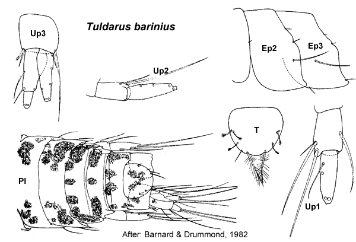

Tuldarus Barnard & Drummond, 1982: 118
Type species. Tuldarus cangellus Barnard & Drummond, 1982, by original designation.
Description.Maxilla 1 palp with apical group of setae only.
Gnathopod 1 simple; coxa small, slightly larger than coxa 2. Gnathopod 2 minutely parachelate or minutely subchelate. Pereopod 3 coxa large, larger than coxa 4. Pereopod 4 coxa large. Pereopod 5 dactylus without robust setae. Pereopod 7 coxa without long posterior spine; basis fully expanded.
Uropod 1 inner ramus not fused to peduncle. Uropod 2 inner ramus not fused to peduncle. Telson entire.

___________________________
This
publication should be cited as: Kilgallen, N.M. & Lowry, J.K. 2008.
Urohaustoriidae (Amphipoda): World Genera and Species. Version 1. 1
January 2008. https://crustacea.net.